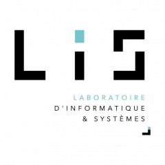

The Computer Science and Systems Laboratory (LIS e Laboratoire deInformatique et Systemes e UMR 7020) is a new structure resulting of the merge of two CNRS/University labs: the Laboratoire deInformatique Fondamentale de Marseille (LIF - UMR 7279) and the Laboratoire des Sciences de leInformation et des Systemes (LSIS - UMR 7296). LIS is a research lab (UMR) under the supervision of the Centre National de la Recherche Scientfique (CNRS), Aix-Marseille University and University of Toulon with the Ecole Centrale de Marseille (ECM) as a partner. LIS premises are located on the university campus of Saint-Jereme and Luminy in Marseille and on the campus of the University of Toulon. It comprises more than 375 members: 190 tenure researchers and professors, about 125 doctoral students and 40 post-docs and 20 technical staff. This new structure brings together the strengths and competences of the two LIF and LSIS laboratories, to meet new scientific challenges. In particular, our team works in collaboration with the Data Science Department at LIS on machine learning, natural language processing, data mining, information retrieval, and artificial intelligence LIS Research Partner: Prof. Bernard Espinasse https://pageperso.lis-lab.fr/bernard.espinasse/biographie.html

Bernard LIS Laboratoire d’Informatique et Systèmes
Assistive is a Research Group that aims to develop innovative technologies in Augmentative and Alternative Communication (CAA). This group was founded in January 2014 at the Informatics Center (CIn) of the Federal University of Pernambuco (UFPE), and is part of the National Reference Center on Assistive Technology (CNRTA) and receives funding from the National Council for Scientific and Technological Development (CNPq) and Coordination for the Improvement of Higher Education Personnel) (CAPES).

Robson Fidalgo Assistive Comunicação Aumentativa e Alternativa